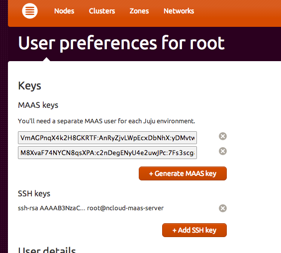
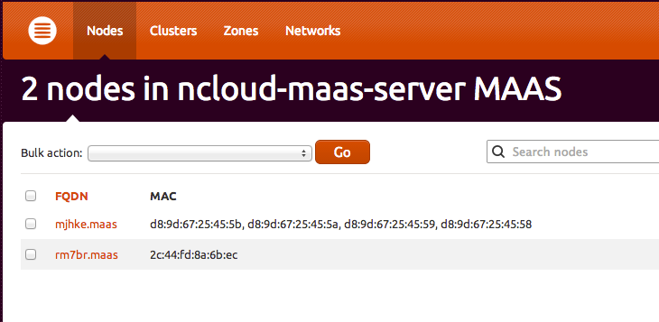
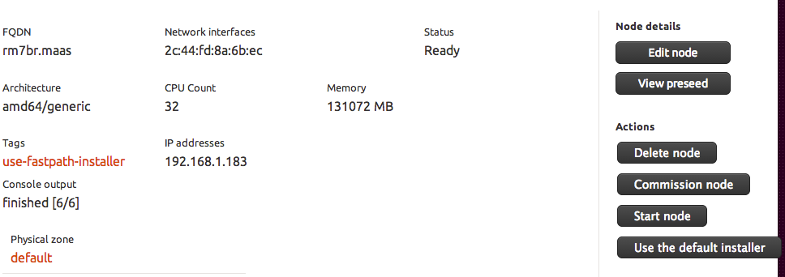

Maas和Juju都是Canonical开发的ops工具，Maas主要用于裸机部署Ubuntu操作系统，Juju可以用于自动化安装应用，如自动搭建mysql-cluster、rabbitmq-cluster、openstack等等。
Maas服务的部署请参考http://maas.ubuntu.com/docs1.5/install.html，建议安装最新的稳定版本，搭建安装极其简单，你可以使用Ubuntu的镜像安装Maas，也可以在系统中用apt-get安装。
内网的可以访问这个http://192.168.1.239/MAAS 用户root 密码Neunn@123
安装完毕后，你可以使用文档中的方法导入镜像，也可以在web界面中导入，点击clusters导航栏下的Import boot images按钮，系统镜像导入需要一定时间，这取决于你的带宽。镜像的配置文件在/etc/maas/bootresources.yaml，如果你不需要32位的系统，可以在这里去掉，然后导入，以便能够节省时间:
boot:
sources:
- keyring: /usr/share/keyrings/ubuntu-cloudimage-keyring.gpg
path: http://maas.ubuntu.com/images/ephemeral-v2/releases/
selections:
- arches:
- i386
- amd64
labels:
- release
- rc
release: trusty
subarches:
- generic
- arches:
- i386
- amd64
labels:
- release
release: precise
subarches:
- generic
storage: /var/lib/maas/boot-resources/
在Maas服务器上生成一个ssh-key，把pub-key添加到Maas中，每个裸机的系统安装完成后，都会通过cloud-init把key注入到系统中，以便你可以通过ssh管理这些已经安装好的系统。
然后把裸机和Mass组成在一个局域网内，所有裸机的网卡与Maas相连，网卡需要开启PXE协议支持，Hp的机器千兆网卡都是默认不支持PXE的，需要在Bios里面修改下，如果你有条件可以直接用万兆口，万兆口是默认开启PXE的。
网络组件完成后，你会在Mass的界面中看到这些机器，Mass能够自动侦测，这点还是很强大的。
这时这些节点的status是Commissioning，所有裸机通电后(此时可能需要手动)会自动进行PXE安装，引导系统安装完成后，裸机会自动关闭。此时裸机的status是Ready。
此时如果选择要安装完整版系统，则点击Start Node即可，选择快速安装操作系统可以点击Use the default installer，然后就可以随意等待了:
Juju的安装就更简单了，参考https://juju.ubuntu.com/install/ ，Juju的复杂性主要在使用上。我们这里需要把Maas集成到Juju中，然后用Juju来统一管理。
我们需要生成一个environments.yaml的配置文件，其配置内容如下，maas-oauth的值可以在Maas的preferences中找到:
default: maas
environments:
# https://juju.ubuntu.com/docs/config-maas.html
maas:
type: maas
# maas-server specifies the location of the MAAS server. It must
# specify the base path.
#
maas-server: 'http://192.168.1.239/MAAS/'
# maas-oauth holds the OAuth credentials from MAAS.
#
maas-oauth: 'M8XvaF74NYCN8qsXPA:c2nDegENyU4e2uwJPc：7Fs3scg8YJzzeQW2LPT25tN24fueNT4s'
然后我们要把Maas管理的裸机集成到Juju中，这个操作叫bootstarp，bootstarp之前要确保裸机的status是Ready状态，否则不能加入到Juju的machine中，bootstarp执行需要一段时间，Juju会把裸机部署真正的操作系统，并完成status Allocated to Root，并在系统中集成Juju的组件，以便实现通过Security Websocket管理和通信。
bootstarp完成后，Juju的environment就建立了，你可以通过 juju status 来查看状态，如果需要再新添加机器，则需要juju add-machine 来添加。
我们可以通过一个例子展现一下Juju的风采:
$ juju status
environment: maas
machines:
"0":
agent-state: started
agent-version: 1.18.2
dns-name: rm7br.maas
instance-id: /MAAS/api/1.0/nodes/node-6c8353f8-d432-11e3-95d9-00e0ed2d0f3c/
series: trusty
services: {}
$ juju add-machine ssh:ubuntu@192.168.1.185
$ juju status
environment: maas
machines:
"0":
agent-state: started
agent-version: 1.18.2
dns-name: rm7br.maas
instance-id: /MAAS/api/1.0/nodes/node-6c8353f8-d432-11e3-95d9-00e0ed2d0f3c/
series: trusty
"1":
agent-state: started
agent-version: 1.18.2
dns-name: 192.168.1.185
instance-id: manual:192.168.1.185
series: trusty
hardware: arch=amd64 cpu-cores=12 mem=16008M
services: {}
这样就是完成了Juju环境的基本构建，我们可以安装一些应用:
$ juju deploy keystone --to 0
$ juju deploy mysql --to 0
$ juju juju add-relation keystone mysql
如此我们便在machine-0上安装了 keystone with mysql。
更酷炫的功能可以访问Web-UI https://192.168.1.183/ 密码: 63cb22c1d517fc65dca4eac78df103b2